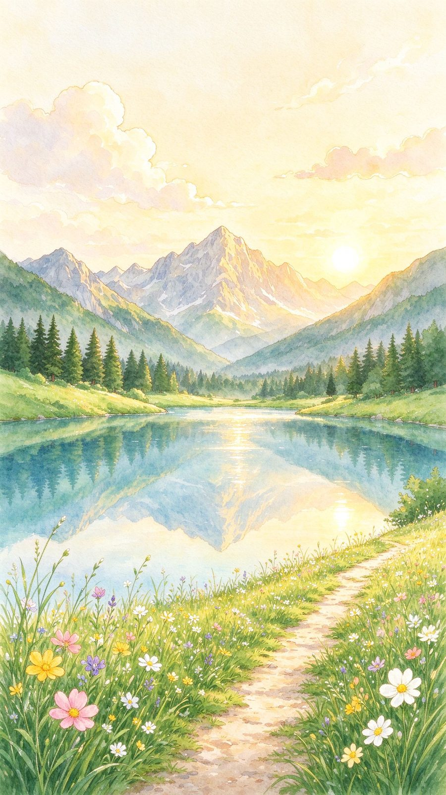
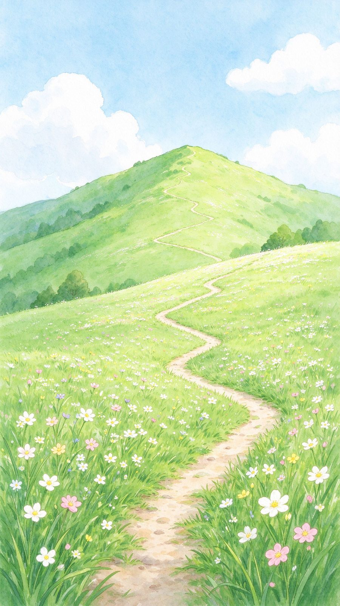
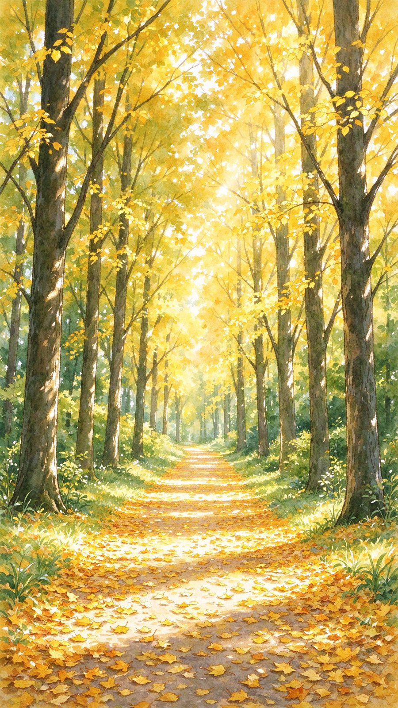
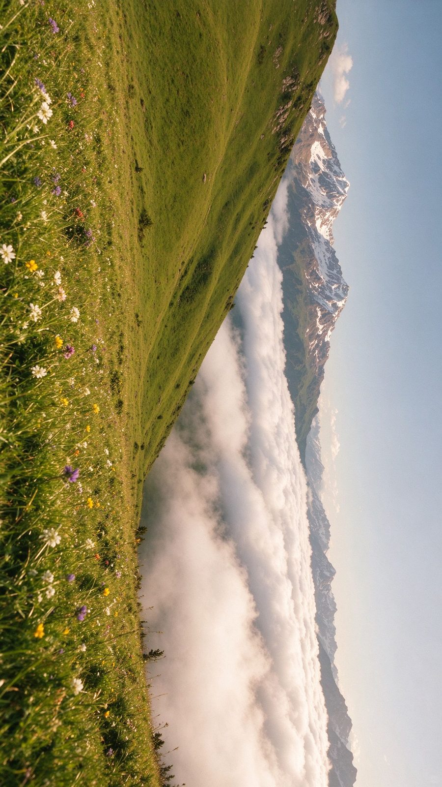
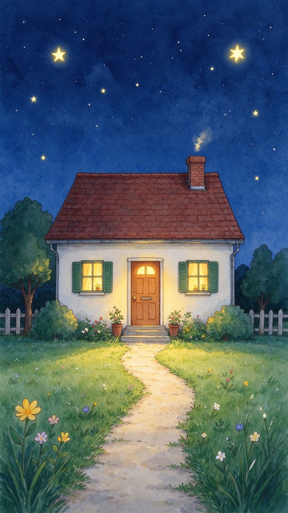
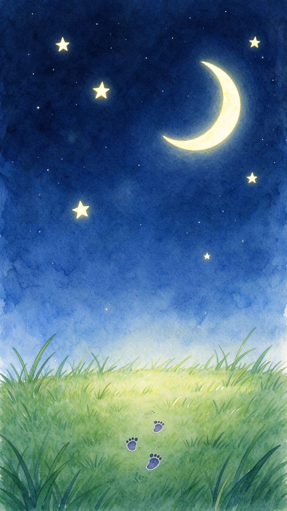

To our little one
把看过的山、湖、田野和星空，
收进这本小书里。
四季轮回，步履不停——每一程都值得被记住。
—— 写给所有想出发的人

A little journey
A Little Journey · 四季风景
2026.03 — 2026.11
To our little one
把看过的山、湖、田野和星空，
收进这本小书里。
四季轮回，步履不停——每一程都值得被记住。
—— 写给所有想出发的人
02

Chapter One
从清晨的湖边出发——
世界很大，脚步很轻。
山不过来，我就过去。
第一章 · 山与湖
清晨的湖面像一面安静的镜子，把远山和晨光都收进了怀里。
第 1 站 · 湖畔清晨
04
第一章 · 山与湖
阳光穿过树梢落成光斑，小径上走一走，连呼吸都变慢了。
第 2 站 · 林间拾光
05
第一章 · 山与湖
站上草甸，云海在脚下翻涌，雪山顶上是更远的远方。
第 3 站 · 云上草原
06

Chapter Two
白天的金色与夜晚的银河——
都被温柔地收藏。
黄昏有归途，夜里也有星光。

第二章 · 光与夜
黄昏把麦田染成金色，风一吹，整片田野都在发光。
第 4 站 · 麦浪与落日
08
第二章 · 光与夜
溪水穿过古村，石桥连着人家，暮色里亮起一盏盏暖灯。
第 5 站 · 溪声与灯火
09
第二章 · 光与夜
帐篷里的暖光与头顶的银河呼应——这一夜，星星离得很近。
第 6 站 · 星空营地
10

Epilogue

陪你长大 · A Little Journey